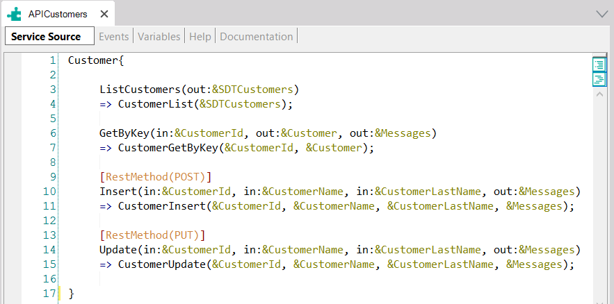
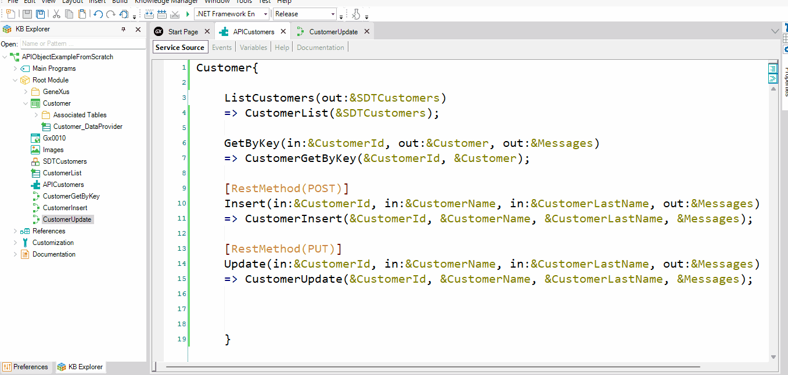

This article describes all the necessary steps to declare, inside an API object called APICustomers, a Delete service that deletes a certain customer record (received by parameter) from the Database.
Consider a Knowledge Base containing:
1) A Customer Transaction object:
Customer
{
CustomerId*
CustomerName
CustomerLastName
}
Note: The Customer Transaction has Automatic data population.
2) An API object called APICustomers. In its Service Source tab, it already contains four services declared that map external names exposed as services with the internal implementations in the KB:

Now, suppose you need to define another service (method) named Delete, as part of the APICustomers object, to allow deleting a certain Customer from the database (the customer identifier is sent as a parameter).
To achieve this, the Customer Transaction must be set as a Business Component.
Next, you have to create a new Procedure object named CustomerDelete.
In the Procedure Rules section, define a Parm rule as follows:
Parm(in:&CustomerId, out:&Messages);
In the Procedure Source, define the following code:
&Customer.Load(&CustomerId)
&Customer.Delete()
If &Customer.Success()
commit
else
rollback
endif
&Messages=&Customer.GetMessages()
Now, go to the APICustomers API Object, and inside its Service Source declare the new method (Delete) under the last method:
Customer{
...
[RestMethod(DELETE)]
Delete(in:&CustomerId, out:&Messages)
=> CustomerDelete(&CustomerId, &Messages);
}
Note that in this case, the RestMethod annotation precedes the service declaration indicating that the HTTP method to be used is DELETE.
It is important to add the same variables you already defined in the Procedure object in the API object.
The next step is to define–if necessary–the Events in the Events section of the API Object (APICustomers).
Event Delete.Before
//Some Code if is needed
EndEvent
Event Delete.After
//Some Code if is needed
EndEvent
The order of events executed in this example is as follows:
Below you can see all the steps being executed:

| Backlinks | |
| Calling rest API Using Postman app | Toc:First Steps with API Objects |